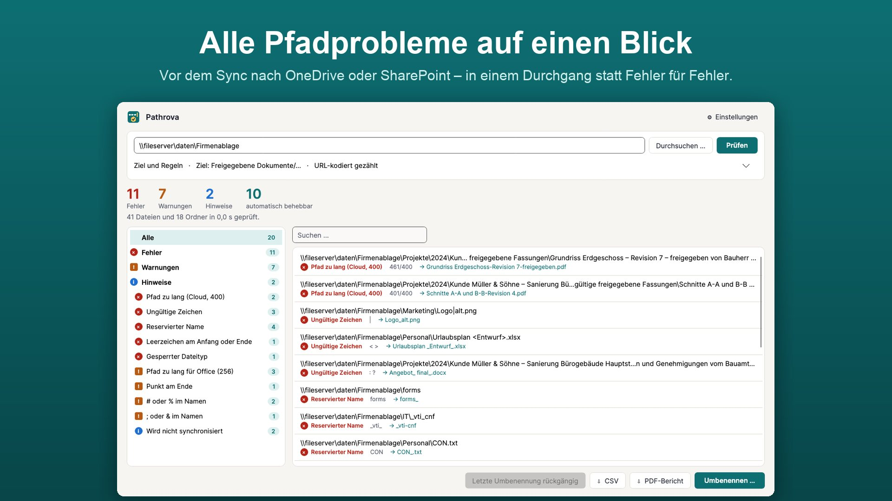
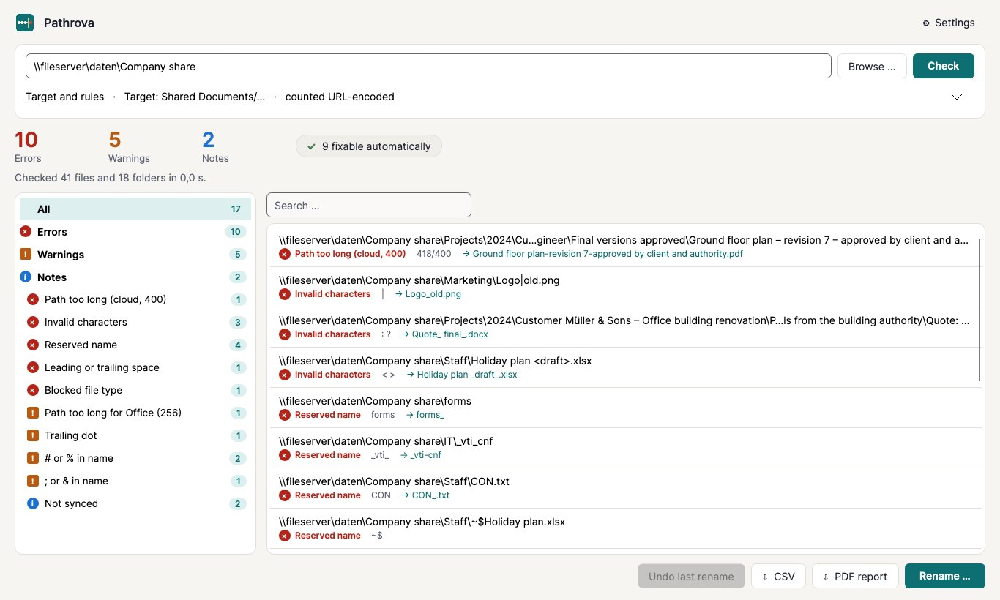

Alle Pfadprobleme. Vor dem Sync.Every path issue. Before you sync.
Der Sync-Client meldet zu lange Pfade und ungültige Namen erst unterwegs, und zwar einzeln. Pathrova prüft den ganzen Ordnerbaum vorher in einem Durchgang, für OneDrive und SharePoint. Danach benennst du sicher um, mit Vorschau und Rückgängig. The sync client reports long paths and invalid names only while syncing, one at a time. Pathrova checks the whole folder tree up front in a single pass, for OneDrive and SharePoint. Then you rename safely, with a preview and undo.
- Alle Probleme in einem Durchgang, nach Art gruppiertEvery issue in one pass, grouped by type
- Sicher umbenennen mit Vorschau und RückgängigSafe renaming with preview and undo
- CSV- und PDF-Bericht für KundenCSV and PDF reports for clients


Einmalkauf, kein AboOne-time purchase, no subscriptionKeine Daten verlassen deinen PCNo data leaves your PCvon Minh Studiosby Minh Studios
7 Tage kostenlos testen, danach Einmalkauf.7-day free trial, then a one-time purchase.
Windows 10 und 11 · x64 und ARM · Deutsch und Englisch · offline, ohne KontoWindows 10 and 11 · x64 and ARM · English and German · offline, no account

